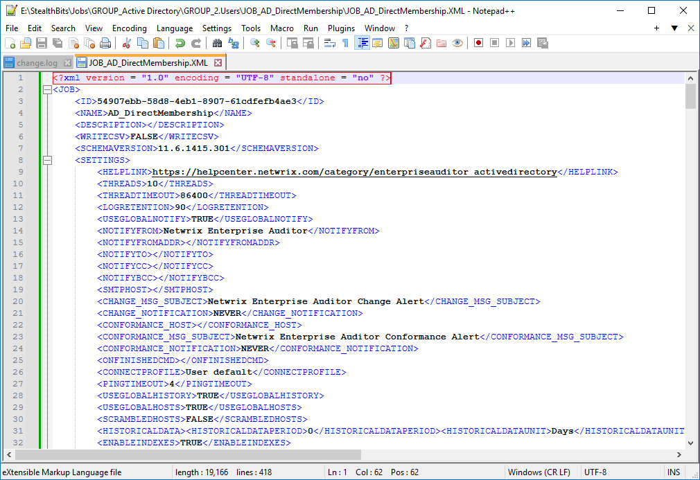

IMPORTANT: This is an unvalidated article. The product R&D team has yet to review some or all of information below.
Symptoms
Refer to the list of the symptoms in your Netwrix Enterprise Auditor environment:
-
A custom job is missing after the recent upgrade.
-
When you attempt to import the job, Enterprise Auditor prompts the following error:
Administrative template file %file_name% cannot be processed: Bad XML document: Switch from current encoding to specified encoding not supported.
Cause
The job file is encoded using an unsupported encoding.
Resolution
Modify the affected document encoding to UTF-8. Import the job after introducing the change.
-
Locate the affected job
.xmlfile. Refer to the following default path for the Jobs folder:C:\Program Files (x86)\STEALTHbits\StealthAUDIT\Jobs\ -
In the file, review the first line. If the
encodingparameter in the <?xml> tag does not stateUTF-8, alter the value toUTF-8. Refer to the following example: